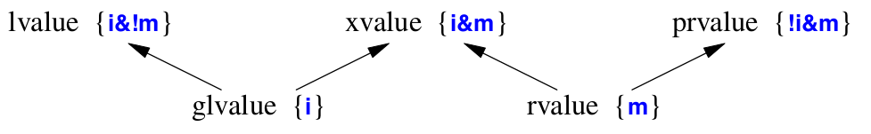

左值与右值¶
概述¶
C++ 中每个表达式都有两个独立的属性：类型（type） 和 值类别（value category） 。值类别决定了表达式能出现在哪些语法位置、能否取地址、能否被移动。
最基本的分类：
左值（lvalue） ：具名的、可取地址的表达式，代表一个持久的对象
右值（rvalue） ：不具名的、通常是临时的表达式，不可取地址，生命周期短暂
简单判断方法：能对表达式取地址（&expr）的就是左值，不能的就是右值。
int i = 42;
int* p = &i; // OK：i 是左值，可以取地址
// int* p2 = &42; // 错误：42 是右值，不能取地址
int foo();
// int* p3 = &foo(); // 错误：foo() 返回值是右值
int& bar();
int* p4 = &bar(); // OK：bar() 返回左值引用，是左值
常见表达式的值类别¶
表达式 |
值类别 |
说明 |
|---|---|---|
|
右值 |
字面量（字符串字面量除外） |
|
左值 |
字符串字面量是 |
|
左值 |
变量名 |
|
右值 |
算术运算产生临时结果 |
|
右值 |
取地址运算符返回一个临时的指针值 |
|
左值 |
解引用得到指针指向的对象 |
|
左值 |
前缀自增直接在原变量上操作，返回变量本身的引用 |
|
右值 |
后缀自增先保存旧值的副本，再自增，返回的是旧值副本（临时对象） |
|
右值 |
构造的临时对象 |
|
右值 |
重载的 |
|
左值 |
重载的 |
|
右值 |
|
为什么 ++i 是左值而 i++ 是右值？¶
本质区别在于运算符的返回类型。看一下它们的典型实现：
// 前缀自增：返回 T&（左值引用）
T& operator++()
{
// 直接修改自身
// ...
return *this; // 返回自身的引用，原对象仍然存在 → 左值
}
// 后缀自增：返回 T（值类型）
T operator++(int)
{
T old = *this; // 1. 保存当前值的副本
++(*this); // 2. 对原对象自增
return old; // 3. 返回旧值副本，old 是局部变量，函数返回后销毁 → 右值
}
前缀自增直接修改原对象并返回 *this 的引用，原对象在函数返回后仍然存在，所以返回 T& → 左值。
后缀自增需要返回自增前的旧值，而原对象已经被修改了，所以只能返回一个局部副本。局部变量在函数返回后销毁，不能返回引用（否则就是悬空引用），只能返回 T （值类型）→ 右值。
这也是为什么 ++i = 10; 合法而 i++ = 10; 不合法——不能给一个即将销毁的临时对象赋值。
函数返回值的值类别取决于返回类型：
返回
T&（左值引用）→ 左值返回
T&&（右值引用）→ 右值（亡值）返回
T（值类型）→ 右值（纯右值）
C++11 的值类别体系¶
C++11 对值类别做了更精细的划分，引入了两个基本属性：
具名性（has identity） ：表达式是否对应一个可识别的对象（可以取地址、可以比较是否是同一个对象）
可移动性（can be moved from） ：表达式的资源是否可以被安全地转移
基于这两个属性，表达式分为三个基本类别和两个复合类别：

值类别 |
具名 |
可移动 |
说明 |
|---|---|---|---|
lvalue（左值） |
✓ |
✗ |
具名且不可移动。变量、函数名、返回左值引用的函数调用等 |
xvalue（亡值） |
✓ |
✓ |
具名且可移动。 |
prvalue（纯右值） |
✗ |
✓ |
不具名且可移动。字面量、算术表达式、返回值类型的函数调用等 |
glvalue（泛左值） |
✓ |
— |
lvalue + xvalue 的统称，具名的表达式 |
rvalue（右值） |
— |
✓ |
xvalue + prvalue 的统称，可移动的表达式 |
lvalue（左值）¶
lvalue 的 l 最初来自 “left”（赋值号左边），但在现代 C++ 中更准确的理解是 “locator value”——它标识一个有持久存储位置的对象。
特征：
可以取地址（
&expr合法）可以出现在赋值号左边
可以用左值引用（
T&）绑定不能被隐式移动（需要显式
std::move）
典型的左值表达式：
int x = 10;
int& ref = x;
x; // 变量名
ref; // 引用本身
*p; // 解引用
arr[0]; // 下标运算
"hello"; // 字符串字面量（const char[6] 数组，存储在静态区）
++x; // 前缀自增
std::cout; // 标准输出流对象
int& foo();
foo(); // 返回左值引用的函数调用 → 左值
foo() = 42; // 可以赋值
int* p = &foo();// 可以取地址
Note
具名的右值引用也是左值。这一点在理解完美转发时非常关键：
void bar(int&& rref)
{
// rref 的类型是 int&&，但 rref 本身是具名变量 → 左值
// int* p = &rref; // OK：可以取地址
// foo(rref); // rref 作为左值传入
// foo(std::move(rref)); // 需要 std::move 才能恢复右值
}
xvalue（亡值）¶
xvalue 的 x 代表 “eXpiring”（即将过期）。亡值是 C++11 新增的类别，表示一个具名但即将被移动的对象——它有身份（可以识别是哪个对象），但资源即将被转移走。
特征：
具名（有身份），但资源可以被安全地窃取
可以绑定到右值引用（
T&&）也可以绑定到 const 左值引用（
const T&）不能取地址（
&std::move(x)不合法）
典型的亡值表达式：
int x = 10;
std::string s = "hello";
std::move(x); // std::move 的返回值
std::move(s); // std::move 的返回值
static_cast<int&&>(x); // 显式转换为右值引用
std::string&& make_rref();
make_rref(); // 返回右值引用的函数调用 → 亡值
struct S { int m; };
S s;
std::move(s).m; // 亡值的成员访问 → 亡值
亡值的实际意义——它是移动语义的触发器：
std::string s1 = "hello";
// std::move(s1) 是亡值，触发移动构造函数
std::string s2 = std::move(s1); // 移动，而非拷贝
// 没有 std::move，s1 是左值，触发拷贝构造函数
// std::string s3 = s1; // 拷贝
亡值告诉编译器：”这个对象虽然还活着，但我不再需要它的资源了，你可以移走。”
prvalue（纯右值）¶
prvalue 的 p 代表 “pure”（纯粹的）。纯右值是最传统意义上的右值——没有身份、没有持久存储位置的临时值。
特征：
不具名，不能取地址
可以绑定到右值引用（
T&&）和 const 左值引用（const T&）不能绑定到非 const 左值引用（
T&）C++17 起，prvalue 不再是”先创建临时对象再拷贝/移动”，而是直接在目标位置构造（强制拷贝消除，Mandatory Copy Elision）
典型的纯右值表达式：
42; // 整数字面量
3.14; // 浮点字面量
true; // 布尔字面量
nullptr; // 空指针字面量
'a'; // 字符字面量
a + b; // 算术运算结果
a > b; // 比较运算结果
&a; // 取地址运算结果
i++; // 后缀自增
std::string("hello"); // 临时对象
MyClass{1, 2}; // 临时对象（列表初始化）
int foo();
foo(); // 返回值类型的函数调用 → 纯右值
[](int x){ return x; }; // lambda 表达式
C++17 强制拷贝消除的影响：
struct Heavy {
Heavy() { std::cout << "构造" << std::endl; }
Heavy(const Heavy&) { std::cout << "拷贝" << std::endl; }
Heavy(Heavy&&) { std::cout << "移动" << std::endl; }
};
Heavy makeHeavy() { return Heavy{}; }
// C++17 之前：可能输出 "构造" + "移动"（或被 RVO 优化掉）
// C++17 起：保证只输出 "构造"（强制拷贝消除，prvalue 直接在 h 的位置构造）
Heavy h = makeHeavy();
glvalue（泛左值）¶
glvalue（generalized lvalue）是 lvalue 和 xvalue 的统称，表示所有”具名”的表达式。它不是一个独立的类别，而是一个分类概念。
glvalue 的共同特征：
可以隐式转换为 prvalue（如读取变量的值）
可以是多态的（通过基类引用/指针访问派生类对象）
可以是不完整类型（如前向声明的类）
struct Base { virtual void f() {} };
struct Derived : Base { void f() override {} };
Derived d;
Base& b = d; // b 是 glvalue（lvalue），可以多态
b.f(); // 调用 Derived::f()
Base&& b2 = std::move(d); // std::move(d) 是 glvalue（xvalue），也可以多态
b2.f(); // 调用 Derived::f()
rvalue（右值）¶
rvalue 是 xvalue 和 prvalue 的统称，表示所有”可移动”的表达式。
rvalue 的共同特征：
不能对 rvalue 取地址（
&rvalue不合法）不能出现在内置赋值运算符的左边
可以绑定到
const T&或T&&可以用于初始化
const T&参数（这就是为什么const T&能同时接收左值和右值）
void foo(const std::string& s); // 接收 glvalue 和 rvalue
void bar(std::string&& s); // 只接收 rvalue
std::string s = "hello";
foo(s); // OK：lvalue
foo(std::move(s)); // OK：xvalue（rvalue 的一种）
foo(std::string("hi")); // OK：prvalue（rvalue 的一种）
bar(std::move(s)); // OK：xvalue
bar(std::string("hi")); // OK：prvalue
// bar(s); // 错误：lvalue 不是 rvalue
五种值类别的关系总结¶
expression
/ \
glvalue rvalue
/ \ / \
lvalue xvalue prvalue
glvalue = lvalue + xvalue ：具名的表达式（有身份）
rvalue = xvalue + prvalue ：可移动的表达式
xvalue 是两者的交集：既具名又可移动（即将过期的对象）
引用绑定规则总结：
引用类型 |
lvalue |
xvalue |
prvalue |
|---|---|---|---|
|
✓ |
✗ |
✗ |
|
✓ |
✓ |
✓ |
|
✗ |
✓ |
✓ |
|
✗ |
✓ |
✓ |
const T& 是万能接收者，可以绑定任何值类别，这也是 C++98 时代用 const T& 作为函数参数的原因。C++11 之后，配合 T&& 重载，可以区分左值和右值，实现移动语义优化。
左值引用¶
左值引用（T&）是 C++98 就有的特性，它是对象的别名，不占用额外内存：
int a = 10;
int& ref = a; // ref 是 a 的别名
ref = 20; // 修改 ref 就是修改 a
std::cout << a; // 输出 20
左值引用的规则：
非 const 左值引用只能绑定左值 ：
int a = 10;
int& ref1 = a; // OK：a 是左值
// int& ref2 = 42; // 错误：42 是右值
const 左值引用可以绑定左值和右值 ：
int a = 10;
const int& ref1 = a; // OK：绑定左值
const int& ref2 = 42; // OK：绑定右值（临时对象的生命周期被延长）
const 引用与临时对象的生命周期¶
当 const 左值引用绑定到一个临时对象（右值）时，临时对象的生命周期会被延长到引用的生命周期结束：
#include <iostream>
#include <string>
using namespace std;
string getName() { return "hello"; }
int main()
{
const string& ref = getName(); // 临时对象的生命周期被延长
cout << ref << endl; // OK：ref 仍然有效
return 0;
// ref 离开作用域时，临时对象才被销毁
}
这是 C++ 标准保证的行为，也是 const 左值引用能接收右值的底层原因。
Warning
生命周期延长只适用于直接绑定的情况。如果临时对象通过函数参数传递后再绑定引用，生命周期不会被延长：
const string& dangerous(const string& s) { return s; }
const string& ref = dangerous(getName()); // 悬空引用！临时对象在函数返回后已销毁
左值引用的常见用途¶
避免拷贝 ：函数参数使用引用传递，避免大对象的拷贝开销
void process(const std::vector<int>& data); // 不拷贝，只读
void modify(std::vector<int>& data); // 不拷贝，可修改
函数返回引用 ：返回对象的引用，允许链式调用或直接修改
class MyClass {
int val;
public:
int& value() { return val; } // 返回左值引用
MyClass& setVal(int v) { val = v; return *this; } // 链式调用
};
MyClass obj;
obj.setVal(10).setVal(20); // 链式调用
obj.value() = 30; // 通过返回的引用直接修改